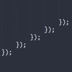
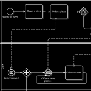

I am a Ph.D. student at McGill University and is advised by Dr. Shane McIntosh. In May 2016, I received my MASc in Electrical and Computer Engineering, at the University of British Columbia. At UBC, I was advised by Dr. Ali Mesbah and Dr. Ivan Beschastnikh. My research is in software engineering, with emphasis on software analysis of modern web applications. I'm also interested in mining software repositories, CI/CD, and Business Process Modeling.
In my free time, I enjoy reading and contributing to open source projects. This is a timeline of important events in my life. And here is an illustrated timeline of the history of Sri Lanka, my motherland.
Publications
Continuous Integration
- Marco Manglaviti, Eduardo Coronado-Montoya, K Gallaba, and Shane McIntosh: An Empirical Study of the Personnel Overhead of Continuous Integration In Proceedings of the 14th International Conference on Mining Software Repositories (MSR), Mining challenge, pp. 471-474, 2017
- Yusaira Khan, Yash Gupta, K Gallaba, and Shane McIntosh: The Impact of the Adoption of Continuous Integration on Developer Attraction and Retention In Proceedings of the 14th International Conference on Mining Software Repositories (MSR), Mining challenge, pp. 491-494, 2017

Callbacks in JavaScript
- K Gallaba, Quinn Hanam, Ali Mesbah, and Ivan Beschastnikh: Refactoring Asynchrony in JavaScript In Proceedings of the International Conference on Software Maintenance and Evolution (ICSME), 353-363, 2017,
- K Gallaba, Ali Mesbah, and Ivan Beschastnikh: Don't Call Us, We'll Call You: Characterizing Callbacks in JavaScript In Proceedings of the ACM/IEEE International Symposium on Empirical Software Engineering and Measurement (ESEM), 247-256, 2015, [Best Full Paper Award]

Business Process Model and Notation (BPMN 2.0)
- K Gallaba, U Pavalanathan, I Jayawardena, E Sooriyabandara, V Nanayakkara: Levi - A Workflow Engine Using BPMN 2.0 Workshop on Cloud-enabled Business Process Management (CeBPM 2012), Nov 28-30, 2012, Paphos, Cyprus; published in: Haller, A., Huang, G., Huang, Z., Paik, H.Y., Sheng, Q.Z. (Eds.): Web Information Systems Engineering - WISE 2011 and 2012 Workshops. Lecture Notes in Computer Science (LNCS) 7652, Springer Verlag, Berlin/Heidelberg 2013, pp. 92-104
Services
- OOPSLA '17 - Artifact Evaluation Committee
- ICSME '17 - Co-Reviewer
- JSS - Co-Reviewer
Recent Blog Posts
Original design: MiniFolio and Adrian Dalca